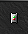
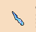
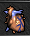
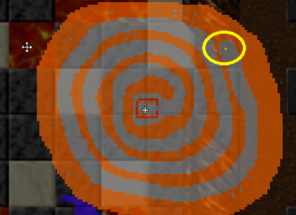
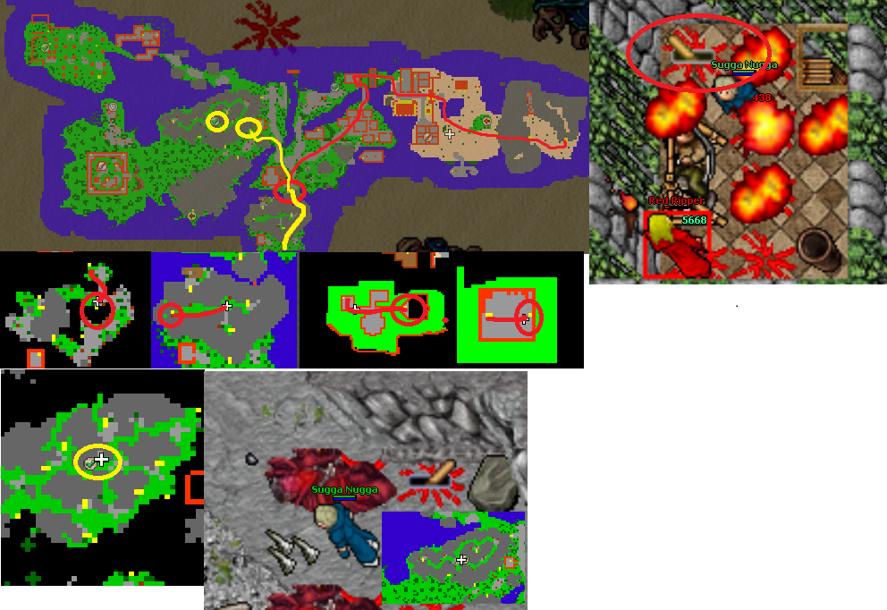

Dark overlord set to Cyclip set upgrade
Recommended level: 1200; duo 900, trio 800
Requirements: Scythe/machete/rune of almighty abilities
Dark overlord set
Silver brooch
 Stone herb
Stone herb
Ice Stalagmite
 Butterfly conservation kit 2
Butterfly conservation kit 2
 Botanist container 2
Botanist container 2
Morgaroth's heart
 Giant eye
Giant eye
This quest requires some time if you are lower level than 1200 as there are loads of monsters, some harder and alot easier. The worst monsters will be Cyclip gods and Alpha doradus.
The items you for the quest you’ll get along the way, Morgaroth’s heart you can loot from monsters such as Morgaroth, Surphyre and Helarctos. Giant eye you can loot from Giants and Hypergiants.
The best way to come here is from Fallen gods checkpoint 1. Follow the path to the North-west where is Xapter protecting the lever to the deeper into Fallen gods. Go past the Xapter and go South on a narrow path. There will eventually come pitfall, head there.
At the next place, you need to pull 2 levers in order to continue. First is straight up from the stairs, go ladders up to the top. Other Lever is to the East stairs up with loads of Scyllas, some arctoses and helarctoses.
After pulling those 2 levers, head West and you’re at the plains area.

Now you need to pull 2 levers in order to continue. First one is hidden under 2 crates North-east of the city walls in a small building. There’s also a couple of orshabaals. The next one is at the mountain up North with surphyres and lots of Asthars. After pulling those, you can grab the checkpoint to the East, then head North and go ladders up.

Go past the draconises and Evil Limp and go down with hybrids. Go North-East past the Xapter, use scythe or other item to cut down the grass and go downstairs. There is no way back after this. Go full around the circle, at the end is Arm of Doom guarding the teleport.

Go in and follow the path as far as you get to the desert. You’ll first go across a bridge and face the Donkey rider.
Now you need to pull 2 levers: 1st at South and 2nd West mountain. It doesn’t matter which you pull first, let’s go first to South. Go upstairs, then down and then a hidden passage to the underground. Head East and go downstairs, there’s no way back; 2 helarctos and 2 hypergiants. Hop into the teleport, there’s 1 red ripper and a lever. PULL THE LEVER BEFORE GOING DOWNSTAIRS!

Now go back upstairs and go the mountain on West side of the area. Go inside the mountains and find the lever.(Included in the picture above)
Then you can head to the quest area. Go downstairs at the small house like place and head East and then straight North downstairs. Follow the path as long as you find yourself at with yellow energy field way to go up and down. Up here is 3 helarctos and 1 helarctos malayana, no need to kill if don’t want to. East is Arm of Doom, South is Dark overlord. West is Cyclip god and Alpha Doradus is blocking the quest stairs. Get past Alpha and you’re good to upgrade your set.